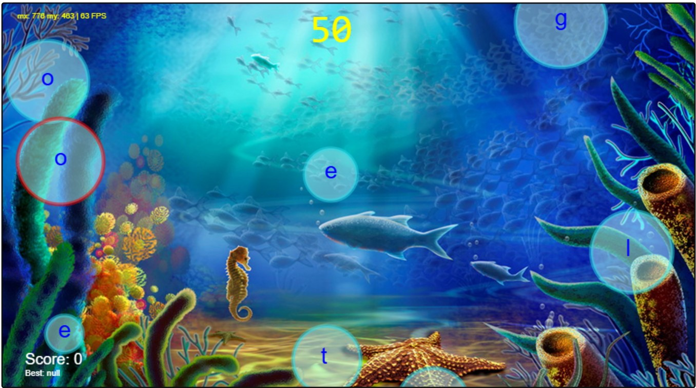
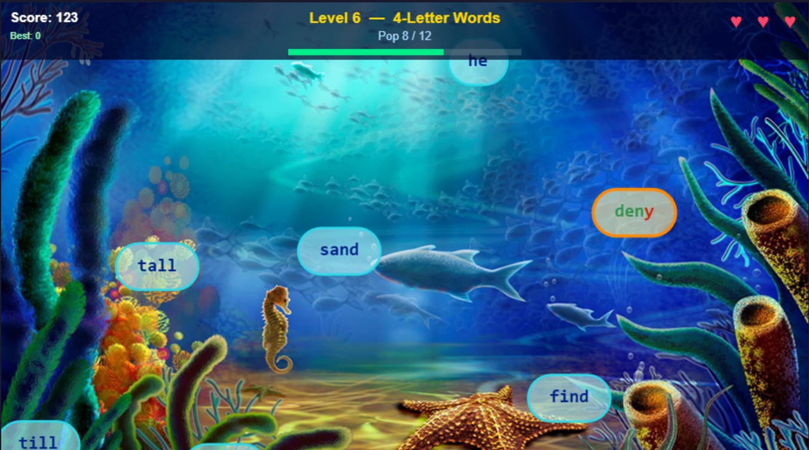

2026-09-29
Recently my 4th-grader informed me that they were practicing typing skills at school. The first thing I thought was just that I was glad they were still teaching this skill. The second thing I thought was: "Wait, didn't I build (or at least start ) a typing game for my older kids like, 10 years ago? Where the heck did that go?" I completely forgot about it.
At the time I had been tinkering with some simple html canvas projects and learning how game loops work. I thought I could turn that into a simple typing game. I was inspired by the old Typer Shark game that I remember playing as a kid. Except, instead of fish and sharks, I just went with simple bubbles that floated up from the bottom.
As with almost every other side project I ever started, I got it sort of working and then abandoned it in favor of the dopamine rush of some shiny new project. The state I found it in (after finally tracking it down in some long-forgotten backup folder) was that a timer runs for 60 seconds, you see how many bubbles you can pop by typing the letter in the bubble as they float up. There’s no increasing difficulty or way to speed up the bubbles. There are no full words or levels, or ways to “die”. I was really happy just to have found it and thought I might post it here just to avoid losing it again. But then a thought occurred to me… “I bet AI could finish this in like 5 minutes.”

So, I fired up Claude and prompted it to complete the game, adding levels, increasing difficulty, and a “3 strikes you’re out” rule if you miss bubbles by letting them go off the screen. My assumption was correct and after a few minutes I had a finished game.

Give it a try:
Play Claude's version here (source)
Play the original version here (source)
Take a look at the code in this folder. I made this years ago and it's a simple typing game where bubbles float up from the bottom and they have a letter in them. You type the letter to pop the bubble. However, it's not anywhere near complete. What I'd like to do is turn it into a real game:
- levels that get progressively more difficult (start with letters, introduce words over time, bubbles speed up over time, etc.)
- if you miss a letter or word, right now you just don't get credit for it. But I'd like it to be that if you miss it and it goes off screen that you get a strike against you and after some number of strikes you lose.”